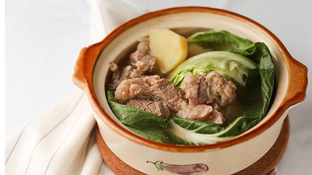

Nilaga Recipe

Description
My nilaga recipe is the ultimate Filipino comfort food—a warm, hearty stew of tender beef, potatoes, cabbage, and sweet corn simmered in a light, flavorful broth.
Simple yet satisfying, it’s a bowl of pure goodness that brings warmth to every meal, perfect for rainy days or family gatherings!
Ingredients
- 4 ½ pounds beef short ribs
- 1 quart water
- 2 onions, chopped
- 1 tablespoon black peppercorns, crushed
- 2 beef bouillon cubes
- 2 potatoes, quartered
- 1 chayote squash, peeled and quartered
- 2 carrots, cut into chunks
- 2 stalks celery, quartered
- salt to taste
- ¼ head cabbage, cut into wedges
Steps
- Place short ribs into a large pot with enough water to cover. Bring to a boil over high heat, then boil for 5 minutes; the ribs will not be fully cooked. Drain and discard cooking water.
- Return ribs to the pot. Pour in 1 quart water, then add onions, peppercorns, and bouillon cubes. Bring to a boil, then cover, reduce the heat, and simmer for 1 hour.
- Skim any fat floating on the surface. Stir in potatoes, chayote squash, carrots, and celery. Cover and simmer until potatoes are tender, about 20 minutes. Season with salt, then add cabbage and cook for 5 more minutes.